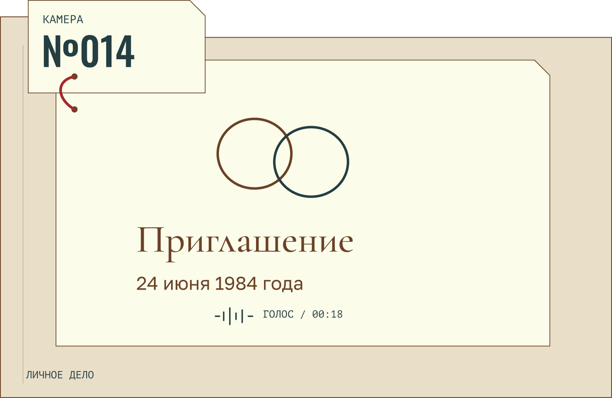
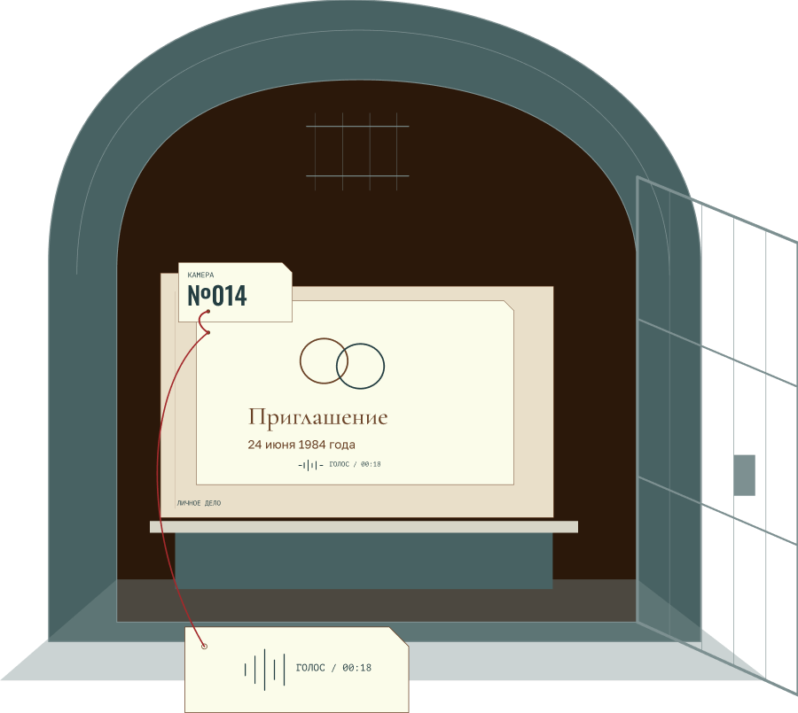
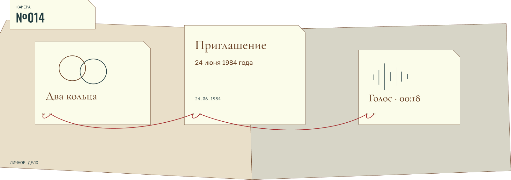
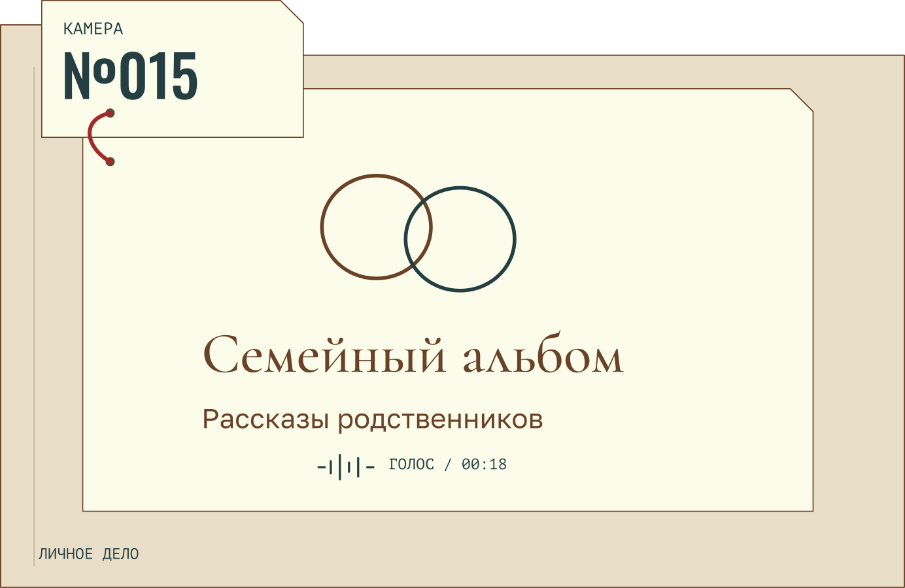
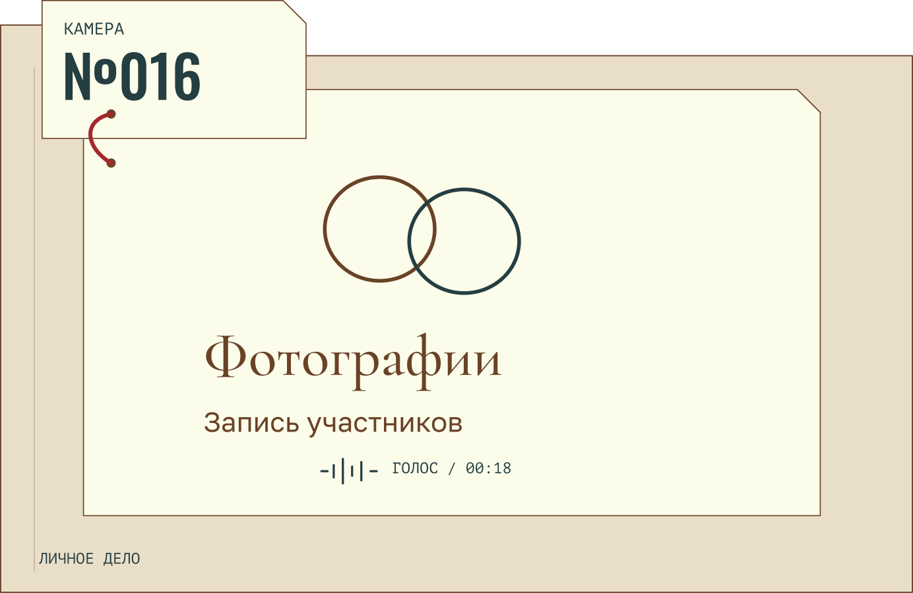

КАМЕРА №014 / ЗЕМЛЯ, 1984
Тихая свадьба
За столом собрались 12 гостей. Сохранились приглашение, кольца и короткая запись голоса.
ВЫСТАВКА ЧЕЛОВЕЧЕСКИХ СВАДЕБ
БЫВШАЯ ТЮРЬМА
АСТЕРОИД АРХИВ-17

01 / ИСТОРИЯ МЕСТА
ТОГДА
Здесь отбывали срок заключённые.
СЕЙЧАС
Камеры отреставрировали
и отвели под свадебные истории.
02 / КОНЦЕПЦИЯ ВЫСТАВКИ
Участники вспоминают обещание перед гостями, ссору за столом, дорогу домой. Мы собрали их рассказы и сохранившиеся вещи. Каждая камера отдана одной свадьбе.
КАМЕРА №014 / ТИХАЯ СВАДЬБА
24 июня 1984 года. За столом — 12 гостей.

03 / СМЫСЛ НАЗВАНИЯ
В бывших тюремных камерах собраны вещи со свадеб и рассказы их участников. По ним можно представить день, который уже прошёл.
ИСТОРИИ УЧАСТНИКОВ

КАМЕРА №014 / ЗЕМЛЯ, 1984
За столом собрались 12 гостей. Сохранились приглашение, кольца и короткая запись голоса.

КАМЕРА №015
Родственники привезли свои песни и угощения. В камере можно послушать их рассказы о празднике.

КАМЕРА №016
Небольшая церемония без общего застолья. Участники передали фотографии и рассказали, почему выбрали такой день.
04 / ПОСЕЩЕНИЕ
Любой билет открывает доступ ко всем камерам.
01
Без экскурсии, с переводом подписей
24 хр.
02
Экскурсия и записи рассказов
42 хр.
03
Экскурсия в небольшой группе и кофе
68 хр.
АРХИВ-17 · ПРИЧАЛ 03 / ЕЖЕДНЕВНО 10:00–20:00 / 60–90 МИНУТ
ПЕРЕД ПОСЕЩЕНИЕМ
Начните с камеры №014, затем выбирайте истории сами. Подписи доступны с переводом. Записи голосов и экскурсия входят в билеты «Хранитель» и «Доверенное лицо».
05 / КОФЕЙНЯ ПРИ ВЫСТАВКЕ
Кофе и выпечка после выставки.
ТОЛЬКО ДЛЯ ЛЮДЕЙ
Можно начать с одного эпизода. Что произошло и почему вы это помните?